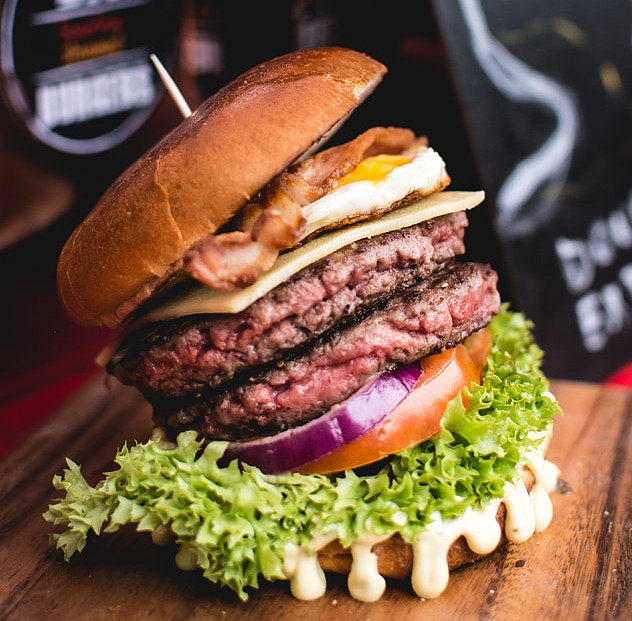

Welcome to Chewbacca's Kitchen
May the flavor be with you

Our Menu
Savory
Darth Vader Balls
A pack of 6 deep-fried balls with cheese inside, served with a side of vinegar and basil sauce.
Chewbaka
6 slow cooked ribs smothered in a smokey BBQ sauce mix.
4 lom cooked stews
They are half falling off the bone meat, large chunks of potato, onion and carrot, with chunks of yam.
The soup itself is graveyard like and texture and takes after a strong roster red color.

Bantha Burgers
Mammoth meat cooked to either medium, blue, or rare, this is served with a melty fine aged cheddar, surrounded by homegrown tomatoes, iceberg lettuce, and our homemade spicy mayo. All of this is placed inside freshly made brioche buns.
Chewy's Chili
Pork based chili with chunks of quartered tomato, thinly shredded onion and carrot, and a healthy dose of chili flakes, lemon, and crushed pepper, served with a side of cheesy garlic bread to dip.
Galactic Goulash
Al dente pasta served with smaller chunks of New Zealand lamb, this is cooked in the oven until the outsides are crispy, while the insides are still a pink hue (made to imitate asteroids). This is covered in our thyme and basil pasta sauce, topped with caramelized onions and shredded Parmesan.
Desserts
Wookiee Waffles
Buttermilk gram cracker waffles. This is served with a sprinkling of graham crackers and some bananas cut up into smaller pieces, drizzled with caramelized honey over the top.